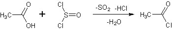
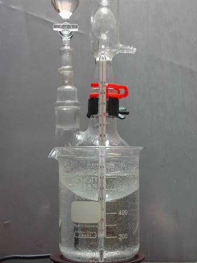
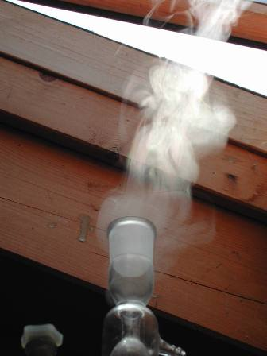
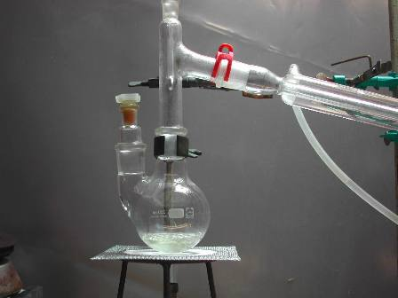
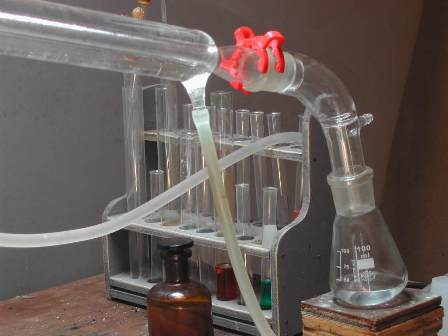
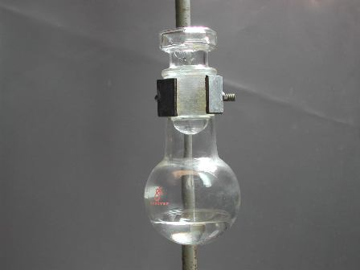

Mi piacciono le sostanze particolarmente "reattive": sono attrici dinamiche e vivaci, sulle quali si può contare quando c'è da imbastire una bella commediola che abbia come trama una sintesina di chimica organica.
Ecco perchè il cloruro di acetile (come il cugino cloruro di benzoile) non può mancare tra i personaggi fondamentali di un home-lab versatile e pronto a reagire con efficienza alle richieste imprevedibili del proprio "gestore", che può svegliarsi una mattina e dire: -"oggi proviamo a fare..."

Materiale occorrente:
- tionile cloruro SOCl2
- acido acetico CH3-COOH
- vetreria opportuna

In un pallone a due colli da 250 ml porre 80 ml di cloruro di tionile SOCl2 e in un imbuto gocciolatore 52 ml di acido acetico glaciale CH3-COOH.Predisporre il setup sotto cappa o in ambiente opportuno con refrigerante allhin alla bocca del pallone, riscaldare a 45° e aggiungere l'acido acetico lentamente goccia a goccia agitando; ad ogni goccia si ha istantanea emissione di SO2 e HCl gassosi, che formano una caratteristica fumata alla bocca del refrigerante.

Nel mio caso la "cappa" è costituita da una finestrella che si apre direttamente sul tetto dell'edificio dove ho il lab e che quasi sempre produce una utilissima corrente d'aria aspirante verso l'alto, come una perfetta cappa naturale.
Le foto sono molto esplicative in tal senso.

Quando tutto l'acido è stato introdotto nel pallone, scaldare a riflusso per mezzo di un bagno d'acqua a 60-65° finchè non si ha più emissione di fumi bianchi (circa un'ora).
Sostituire l'allhin con un condensatore Liebig e distillare raccogliendo fino a circa 65°
Il residuo, c

ontenente chissà quali sottoprodotti clorurati, è estremamente irritante e lacrimogeno.Ridistillare il prodotto, raccogliendo fino a circa 55-57°
Purtroppo la resa ottenuta in acetilcolruro è molto scarsa, circa il 30%; ritengo (ma è solo un'idea non confermata) che essendo un prodotto molto volatile parecchio se ne vada durante il riflusso assieme ai gas acidi, nonostante il refrigerante.
Altro se ne perde con le due distillazioni se si vuole un prodotto decentemente puro.
P.e. 52°, d.1,10

Questo cloruro acilico si presenta come un liquido incoloro mobilissimo fumante all'aria (si idrolizza istantaneamente ad acido acetico ed acido cloridrico), di odore estremamente acre ed irritante, corrosivo, da maneggiare con molta cautela ma utile in tante reazioni di acetilazione.
Ha avuto l'onore di una bella bottiglietta ambrata e con tappo smerigliato, come si conviene per i reagenti "nobili" e attaccabrighe come sono tutti gli alogenuri acilici.
3 commenti